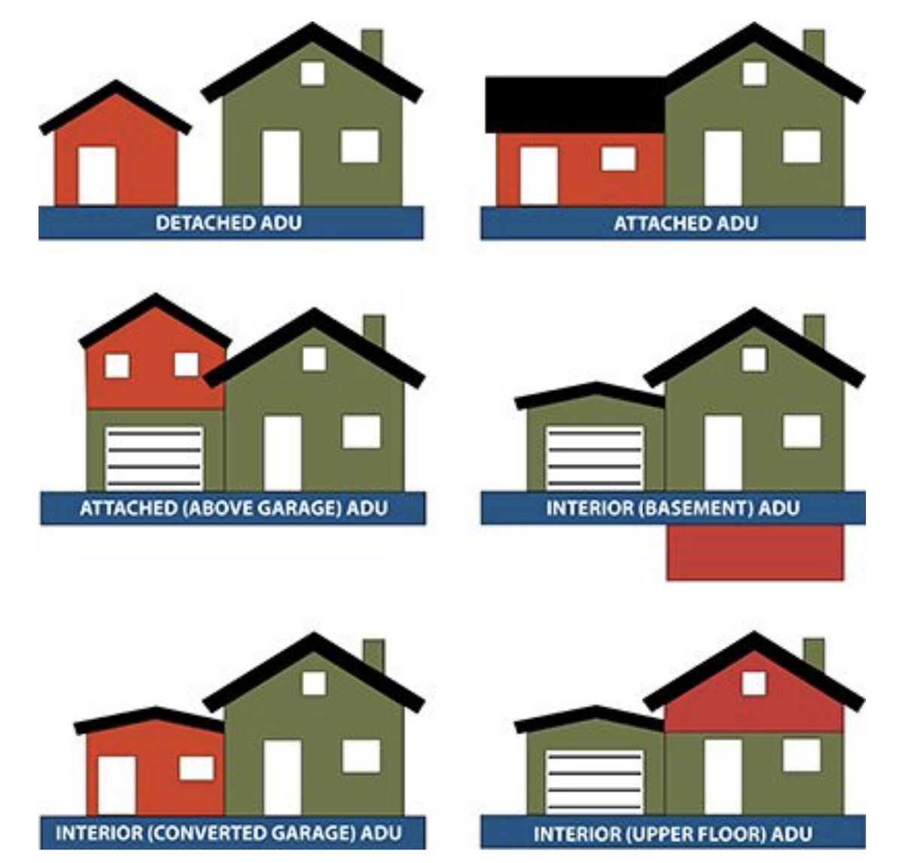
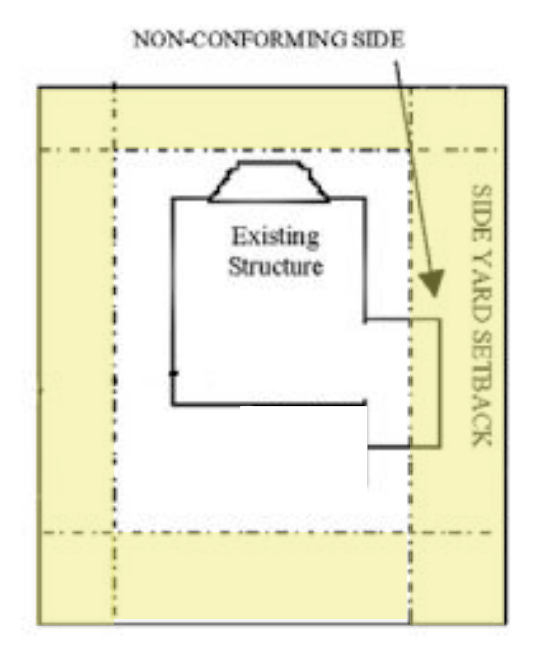

Asheville City Council - January 27th Meeting
February 2, 2026
Here’s what we found to be the most important housing-related items at Asheville’s City Council meeting of Tuesday, January 27, 2026.
ADU Cleanup Amendment
Outcome: Approved
Votes:
In favor: S. Antanette Mosley, Bo Hess, Kim Roney, Sheneika Smith, Maggie Ullman, Esther E. Manheimer
There was one item of note on this agenda as far as we were concerned: an amendment to the city’s Unified Development Ordinance—the “UDO”, aka its zoning code—that had to do with Accessory Dwelling Units, or ADUs.
ADUs are residential unit additions to parcels with existing homes that can serve as more flexible housing. They can be standalone structures in a backyard, or “attached,” in the case of basement units, or perhaps a dwelling above a garage.

The amendment up for discussion at the meeting was absolutely minor. In fact, it was so inconsequential, that it didn’t have anything to do with building new dwellings or home additions at all! It only really related to the question of whether or not existing structures could be converted into an ADU.
But somehow, this very minor change to the UDO became a big deal. Council did end up unanimously approving the amendment. So was this whole thing a symbolic victory? A harbinger for more changes to come to the city’s ability to add more attainable housing inside of our core residential neighborhoods? Or was the months-long ordeal a distraction that kept city government from cultivating bigger changes? We’ll let you decide.
* * *
Specifically, the amendment under consideration was about existing accessory structures (things like backyard sheds) that the city would consider non-conforming. These are old structures that existed before the city’s current zoning code—its UDO—existed in present form. So if a large shed was built close to the edge of the property in the 1980s, that might violate the current required setback. And that’s actually totally fine, normally. Lots of buildings are technically non-conforming in the city, it doesn’t actually mean anything is wrong.
The problem happens when someone decides they want to take that existing accessory structure and put it to a better use; for example, to add some drywall and plumbing and convert it into a home for a relative or for a tenant. Under such circumstances, homeowners needed to go to Asheville’s Board of Adjustment to make the case that those setbacks that were enacted after their backyard structures were built shouldn’t have to apply in their case.

In fact, it was a spate of such cases in front of the Board of Adjustment that spurred this amendment to be written by the city’s Planning and Urban Design staff.
October’s Planning and Zoning Commission Meeting
Once city staff writes amendments like these, they are given a review by the city’s Planning and Zoning Commission before heading to City Council’s agenda. No one expected that the commission’s vote on this UDO amendment would involve much fuss, but as it prepared to review the amendment last October, the Legacy Neighborhood Coalition—which is made up representatives from various neighborhood associations whose communities generally include more racial and ethnic diversity than similarly older or core neighborhoods—wrote a letter to the board in protest.
The letter clearly sparked some concern. Asheville City Council was scheduled to hear this ADU text amendment later that month, in October 2025, but it was pushed back on the agenda to January 2026.
Later in October, two letters to the editor at the Mountain XPress presented counterpoints to the concern, making the argument that the very minor amendments should move forward. (One of those letters was from one of our members.)
Last Week’s Council Meeting
The reason for the delay appears to have been a discussion internal to the city government as to whether it was a good idea, or even a legal one, to exclude certain neighborhoods from the proposed changes. The city did set a precedent for this last March, when it excluded a range of the city’s neighborhoods from some other minor pro-housing residential zoning code reforms.
Ultimately, in the days before the council meeting, city staff produced a memo that recommended against such neighborhood exclusion. Beside the question as to whether or not it was legal, staff raised concerns that this would be going against the recommendations of the city’s 2024 Affordable Housing Plan and 2023 Missing Middle Housing Study and Displacement Risk Assessment, and suggested that the change would “level the playing field” for home owners in all kinds of neighborhoods that might be able to make better use of their own property while pitching in on the city’s housing goals at the same time.
The day before the meeting, Asheville For All sent City Council a letter in support of city staff’s position. (We take care to note that Asheville For All has not officially taken a position on the larger question of whether or not the city should exclude “legacy neighborhoods” or neighborhoods identified as having certain vulnerabilities from various zoning code changes related to infill housing.)
In the end, with the Asheville City Council voting unanimously for the amendment, perhaps it all seems like much ado about nothing! Still, it is rare to see all of the councilors on the same page when it comes to pro-infill-housing changes to the city’s residential neighborhoods. (Council has been notably divided on housing policy.) We hope to see it continue.
Additional Media Coverage
- Citizen Times: “Asheville removes barrier for some Accessory Dwelling Unit conversions”
- Blue Ridge Public Radio: “Asheville eases rules on accessory dwelling units”
Explore More Council Votes
Use our Asheville City Council Vote Tracker to find out how councilors have voted on housing-related items.